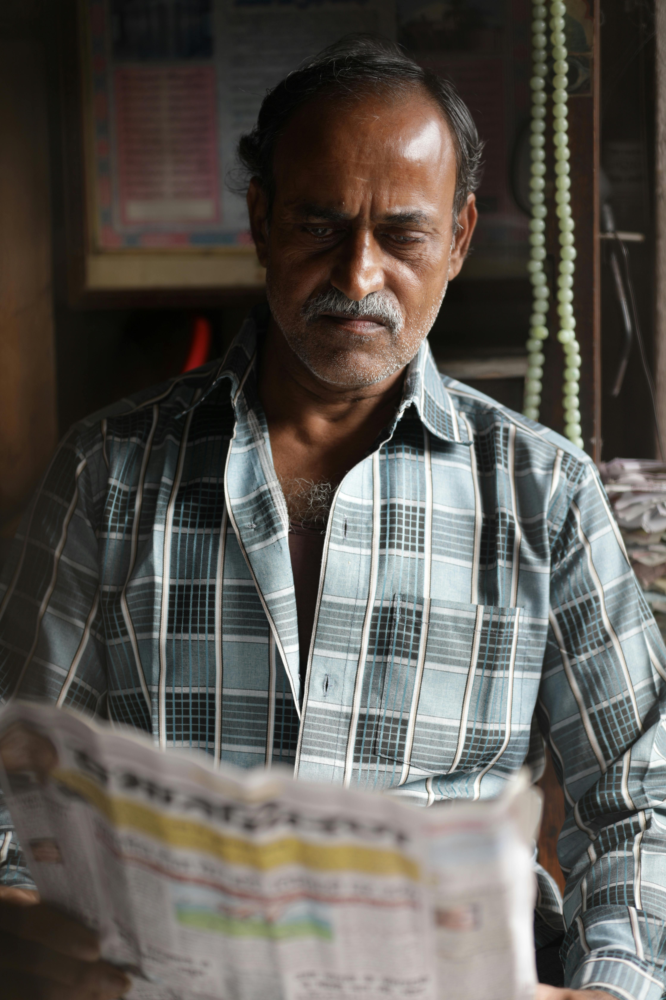
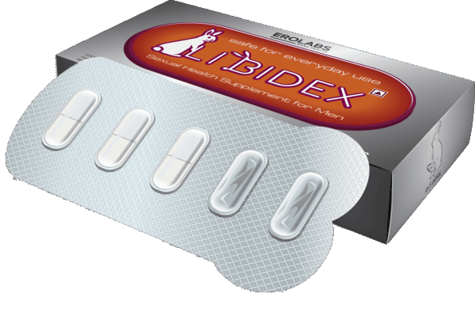
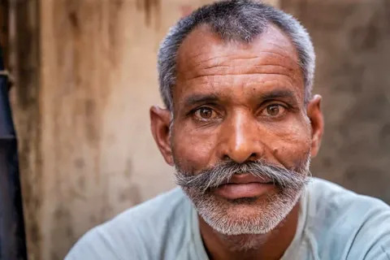
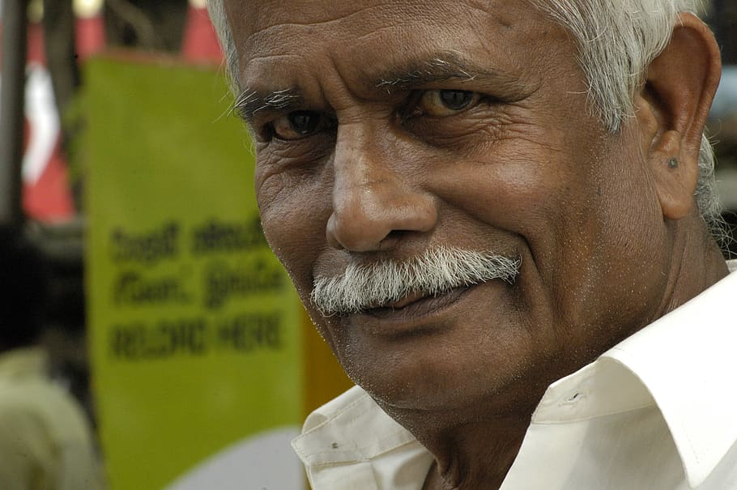

35 के बाद कई पुरुष इन बदलावों को नोटिस करते हैं…
समय के साथ ऊर्जा और जीवनशैली में छोटे बदलाव आना सामान्य है

जैसे-जैसे उम्र बढ़ती है, शरीर में कुछ प्राकृतिक बदलाव होना सामान्य है।
35–40 की उम्र के बाद कई पुरुष अपनी ऊर्जा, सक्रियता और समग्र स्वास्थ्य में हल्के बदलाव महसूस करते हैं।
शुरुआत में ये छोटे लगते हैं — लेकिन समय के साथ इनका असर महसूस हो सकता है।
👉 अभी पूरी जानकारी देखें⚠️ यह जानकारी हर पुरुष के लिए महत्वपूर्ण हो सकती है:
- ऊर्जा स्तर में कमी
- थकान जल्दी महसूस होना
- दैनिक सक्रियता में बदलाव

कई लोग इन बदलावों को नजरअंदाज कर देते हैं, यह सोचकर कि यह अस्थायी हैं।
*यह जानकारी स्वास्थ्य विशेषज्ञों के सामान्य अवलोकनों पर आधारित है*
लेकिन विशेषज्ञों के अनुसार, जीवनशैली और तनाव जैसे कारक इसमें महत्वपूर्ण भूमिका निभाते हैं।

आजकल अधिक लोग अपने स्वास्थ्य और ऊर्जा स्तर को बेहतर बनाए रखने के तरीके खोज रहे हैं।
कुछ महत्वपूर्ण बातें:
- ब्लड सर्कुलेशन का असर समग्र स्वास्थ्य पर पड़ता है
- तनाव और लाइफस्टाइल स्थिति को प्रभावित कर सकते हैं
- नियमित ध्यान और देखभाल महत्वपूर्ण है
इसी कारण आज अधिक लोग ऐसे विकल्पों की तलाश कर रहे हैं जो आसान और सुविधाजनक हों।

Libidex एक हर्बल सपोर्ट विकल्प है, जिसे ऊर्जा और समग्र स्वास्थ्य को सपोर्ट करने के लिए बनाया गया है।
कुछ उपयोगकर्ताओं के अनुसार, नियमित उपयोग के साथ उन्हें अपने दैनिक जीवन में सकारात्मक बदलाव महसूस हुआ।
👉 पूरी जानकारी नीचे उपलब्ध है
👉 अभी जानें कैसे सुधार करें⭐ उपयोगकर्ताओं की राय:
"मैंने कुछ हफ्तों तक इसका उपयोग किया और अब मैं ज्यादा एक्टिव महसूस करता हूं।"
"पहले मैं जल्दी थक जाता था, लेकिन अब मेरी एनर्जी बेहतर है।"

"मैंने इसे ट्राय किया और धीरे-धीरे बदलाव महसूस हुआ।"

"शुरुआत में यकीन नहीं था, लेकिन अब फर्क दिख रहा है।"
"मैं खुद को पहले से ज्यादा एनर्जेटिक महसूस करता हूं।"
यह सामग्री केवल सामान्य जानकारी के लिए है और किसी भी प्रकार की चिकित्सा सलाह का विकल्प नहीं है।
ध्यान दें: समय पर ध्यान न देने पर स्थिति धीरे-धीरे बिगड़ सकती है
अच्छी बात यह है कि सही तरीके अपनाकर इस स्थिति में सुधार संभव है